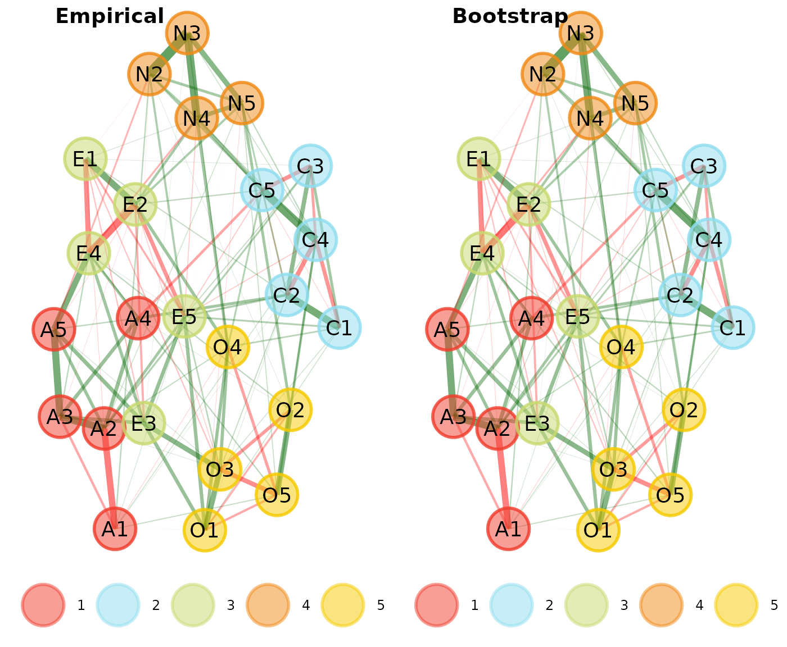
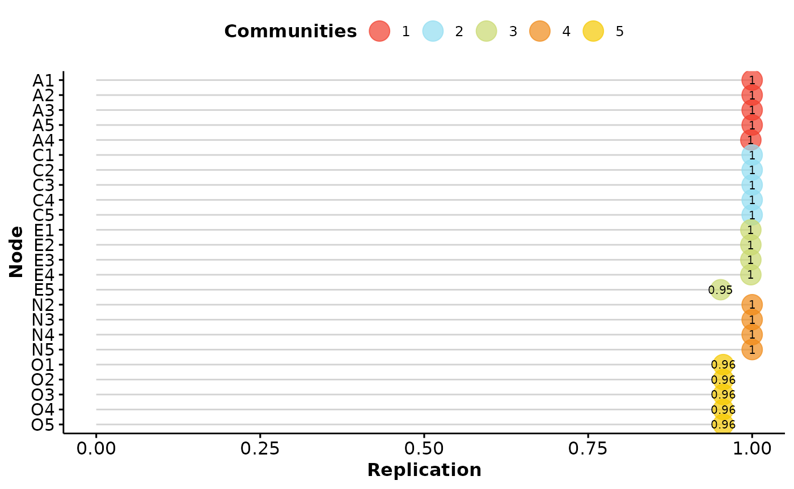

The general workflow of Exploratory Graph Analysis (EGA; Golino & Epskamp, 2017; Golino et al., 2020) should at minimum take the following order of analysis:
determine redundancies (using
UVA)perform
EGAcheck stability of
EGA(usingbootEGA)
To demonstrate this workflow, we’ll use the bfi dataset
from the {psych}
package.
About the Dataset
25 personality self report items taken from the International
Personality Item Pool (ipip.ori.org)
were included as part of the Synthetic Aperture Personality Assessment
(SAPA) web based personality assessment project. The data from 2800
subjects are included here as a demonstration set for scale
construction, factor analysis, and Item Response Theory analysis. Three
additional demographic variables (sex,
education, and age) are also included.
Description was taken from ?psychTools::bfi
Determine Redundancies
# Load packages
library(EGAnet); library(psychTools)
# Perform Unique Variable Analysis
bfi_uva <- UVA(
data = bfi[,1:25],
key = as.character(bfi.dictionary$Item[1:25])
# Optional: provide item descriptions
)
# Print results
bfi_uvaVariable pairs with wTO > 0.30 (large-to-very large redundancy)
node_i node_j wto
Get angry easily. Get irritated easily. 0.431
----
Variable pairs with wTO > 0.25 (moderate-to-large redundancy)
----
Variable pairs with wTO > 0.20 (small-to-moderate redundancy)
node_i
Don't talk a lot.
Am exacting in my work.
Am indifferent to the feelings of others.
Do things in a half-way manner.
Know how to comfort others.
Get angry easily.
Have frequent mood swings.
Inquire about others' well-being.
node_j wto
Find it difficult to approach others. 0.226
Continue until everything is perfect. 0.225
Inquire about others' well-being. 0.219
Waste my time. 0.209
Make people feel at ease. 0.207
Have frequent mood swings. 0.205
Often feel blue. 0.204
Know how to comfort others. 0.203
Unique Variable Analysis (Christensen,
Garrido, & Golino, 2023) uses the weighted topological overlap
measure (Nowick et
al., 2009; see ?wto) on an estimated network. Values
greater than 0.25 are determined to have considerable local dependence
(i.e., redundancy) that should be handled.
Based on the output above, there is one pair of variables that are
above this cut-off (and quite substantially):
Get angry easily. and Get irritated easily.
(
= 0.431). By default, the UVA will remove all redundant
variables
(
0.25) except for one based on the following rules:
doublets (two variables): The variable with the lowest maximum weighted topological overlap to all other variables (other than the one it is redundant with) is retained and the other is removed
triplets (three or more variables): The variable with the highest mean weighted topological overlap to all other variables that are redundant with one another is retained and all others are removed
The variables that were removed in this automated process can be viewed using:
bfi_uva$keep_remove$keep
[1] "Get irritated easily."
$remove
[1] "Get angry easily."Moving forward, we’ll work with the reduced dataset obtained from the
UVA function.
Perform EGA
With redundancies handled, EGA is ready to be applied to
the data:
bfi_ega <- EGA(data = bfi_uva$reduced_data)With the reduced data, five dimensions are recovered from the
bfi dataset (consistent with the five factor model of
personality). We can obtain a summary of this output:
summary(bfi_ega)Model: GLASSO (EBIC with gamma = 0.5)
Correlations: auto
Lambda: 0.0597096451199323 (n = 100, ratio = 0.1)
Number of nodes: 24
Number of edges: 125
Edge density: 0.453
Non-zero edge weights:
M SD Min Max
0.041 0.112 -0.270 0.396
----
Algorithm: Walktrap
Number of communities: 5
A1 A2 A3 A4 A5 C1 C2 C3 C4 C5 E1 E2 E3 E4 E5 N2 N3 N4 N5 O1 O2 O3 O4 O5
1 1 1 1 1 2 2 2 2 2 3 3 3 3 3 4 4 4 4 5 5 5 5 5
----
Unidimensional Method: Louvain
Unidimensional: No
----
TEFI: -24.989The summary contains several things of interest. First, it tells us
what model was used to estimate the network ("glasso") and
what parameters were used for that model such as gamma
()
and lambda
().
Second, there are descriptives about the network such as the number of
nodes, edges, edge density, and descriptive statistics about the edges.
Third, it tells us what community detection algorithm was used, the
number of communities (dimensions), and each variable’s membership.
Fourth, the unidimensional method and check (No meaning it
was not unidimensional). Finally, the Total Entropy Fit Index (or
tefi) is provided, which can be used for model comparison
(see Golino et
al., 2021).
To change the appearance of the EGA plot,
see Plotting
Check Stability of EGA
# Perform Bootstrap EGA
bfi_boot <- bootEGA(
data = bfi_uva$reduced_data,
seed = 1 # set seed for reproducibility
)Bootstrap EGA (Christensen & Golino,
2021) performs a parametric (default) or resampling procedure to
determine the robustness of the empirical EGA analysis
(using 500 iterations by default). The plot output by
bootEGA is the median network structure representing the
median value of each pairwise partial correlation across the bootstraps.
After obtaining the median value for each pairwise partial correlation,
a community detection algorithm is applied ("walktrap" by
default).
In this example, the median structure matches our empirical structure:
bfi_compare <- compare.EGA.plots(
bfi_ega, bfi_boot,
labels = c("Empirical", "Bootstrap")
)
Although this result is common, it is by no means necessary. Because a community detection algorithm is applied adhoc to the median network structure, it is possible that the number and content of the communities do not match the empirical structure. This possibility happens from time-to-time and does not mean there is anything wrong with your analysis but instead might hint at some instability in the structure.
Following through on some basic descriptive statistics about the bootstrap analysis is often more informative:
summary(bfi_boot)Model: GLASSO (EBIC)
Correlations: auto
Algorithm: Walktrap
Unidimensional Method: Louvain
----
EGA Type: EGA
Bootstrap Samples: 500 (Parametric)
4 5
Frequency: 0.046 0.954
Median dimensions: 5 [4.59, 5.41] 95% CIMuch like the empirical procedure, the first information is about the estimation methods and algorithms used. After, there is information about the bootstrap procedure including how frequent each number of communities were observed and the median number of communities (with 95% confidence intervals). In this example, the structure is quite stable and can be taken as preliminary evidence of a robust structure.
The frequency of the number of communities should not be used as the main evidence of robustness. Instead, dimension and item stability should be obtained to better understand the details.
dimensionStability(bfi_boot)
EGA Type: EGA
Bootstrap Samples: 500 (Parametric)
Proportion Replicated in Dimensions:
A1 A2 A3 A4 A5 C1 C2 C3 C4 C5 E1 E2 E3
1.000 1.000 1.000 0.998 1.000 1.000 1.000 1.000 1.000 1.000 0.998 0.998 0.998
E4 E5 N2 N3 N4 N5 O1 O2 O3 O4 O5
0.998 0.952 1.000 1.000 1.000 1.000 0.956 0.956 0.956 0.956 0.956
----
Structural Consistency:
1 2 3 4 5
0.998 1.000 0.958 1.000 0.956 The output of dimensionStability produces a plot of how
often each variable is replicating in their empirical structure across
bootstraps. The summary statistics produced also relay this information
as well as structural consistency. Structural consistency is defined as
the extent to which each empirically derived dimension is
exactly (i.e., identical variable composition) recovered from
the replicate bootstrap samples (Christensen, Golino, &
Silvia, 2020). In general, values of structural consistency and item
stability greater than 0.70-0.75 reflect sufficient stability (Christensen & Golino,
2021). Our results demonstrate that the five dimension structure
we’ve identified is quite robust.